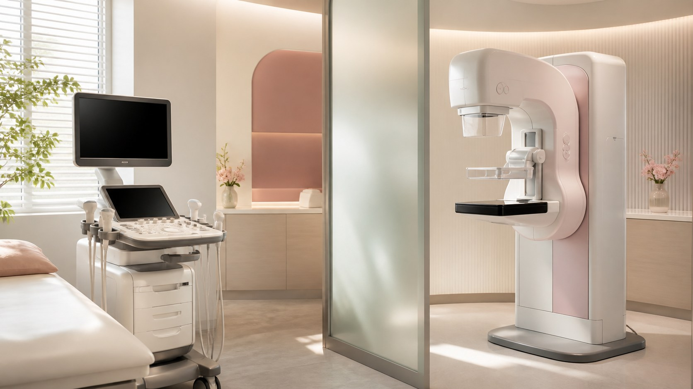

健康护理
乳腺检查指南｜B 超和钼靶是什么，多久查一次
体检时看到乳腺 B 超、钼靶有点懵？这篇说清它们分别是什么、各适合什么情况，以及一般多久查一次。自己平时的留意和专业检查并不冲突，两者都重要。

很多人拿到体检单，看到乳腺 B 超、钼靶两个词就发懵：这俩是什么？是不是都要做？我该做哪一个？其实它们不是互相取代的关系，而是各有分工。这一篇就用大白话，把它们讲清楚。
乳腺 B 超，用的是超声波。它靠声波在组织里的回声来成像，能看清乳房里的脂肪、腺体、囊肿和实性肿块，检查过程没有辐射，一般也不会有明显不适。因为它对年轻、偏致密的乳腺看得比较清楚，通常也更容易被接受——很多医生会建议年轻女性，或者需要反复随访的人，优先用 B 超做基础的筛查和复查。它的局限是：对一些很细小的问题，敏感度不一定最理想，所以个别情况下还需要别的检查来补充。
钼靶（乳腺 X 线摄影），简单说就是给乳房拍一张特殊的「X 光片」。它更擅长发现一些钙化，以及早期的、结构上的微小变化，而这些有时是普通触诊摸不到的。不过它会有一定的辐射，而且对致密型乳腺、对年轻女性来说，图像可能不那么清晰，检查时也往往伴随一些不适。所以它更适合到了一定年龄之后使用，或者在医生认为有必要时来做。到底要不要做、隔多久做一次，真的要看你的年龄、家庭情况和个人风险。
检查频率这件事，很多建议其实给你的是一句「一般」：一般成年之后，就可以开始定期关注，把它纳入常规体检；具体从什么时候开始做、多久做一次，要根据你的年龄、是否有家族史、之前有没有查出过结节等情况，由医生来判断。这里不能给你一个放之四海而皆准的数字——因为本来就不存在。最稳妥的做法是：定期体检时做一次，然后听医生的建议。
再强调一句：你的「自查」和「专业检查」并不冲突，也不能互相替代。自查帮你平时熟悉身体、发现明显的变化；专业检查靠影像，帮你看到手摸不到的东西。把「定期检查、该查就查」当成一个习惯，而不是有了症状才临时抱佛脚，会让人踏实很多。
最后记住：这篇是把两类检查的常识讲给你，好让你在看体检单、听医生说话时心里有数，而不是让「外行」自己决定做什么检查、多久做一次。具体的方案，交给专业医生，遵医嘱就好。
本文用于公众健康教育，不构成医疗建议，不替代面诊。医美决策请与具备资质的医师面诊后作出。